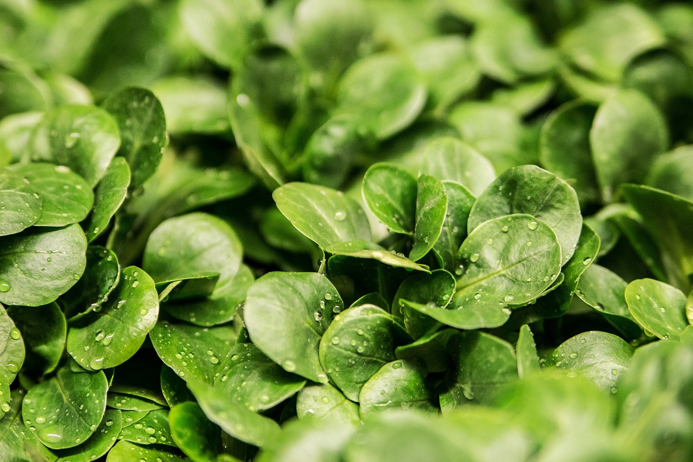

Witaj na naszej stronie
Dowiedz się, jak uprawiać zdrowe i smaczne warzywa bez użycia chemii.

Jak uprawiać warzywa ekologicznie?
Podstawowe zasady zdrowej uprawy:
- Marchew: Lubi lekką, piaszczystą glebę i dużo słońca.
- Pomidor: Wymaga podpór i regularnego podlewania.
- Sałata: Rośnie szybko i najlepiej smakuje świeża.
- Ogórek: Potrzebuje ciepłego miejsca i dużej ilości wody.
- Fasola: Poprawia jakość gleby dzięki wiązaniu azotu.

Galeria Wideo
Wkrótce dodamy poradniki video!
O nas
Jesteśmy uczniamy 2LO w Dębicy i realizuje projekt w konkursie "Naukolatek - nastoletni naukowiec" organizowany przez Politechnikę Rzeszowską. Skupiamy się na zbudowaniu ekologicznej szklarnii oraz edukacji na temat zrównoważonych przydomowych upraw